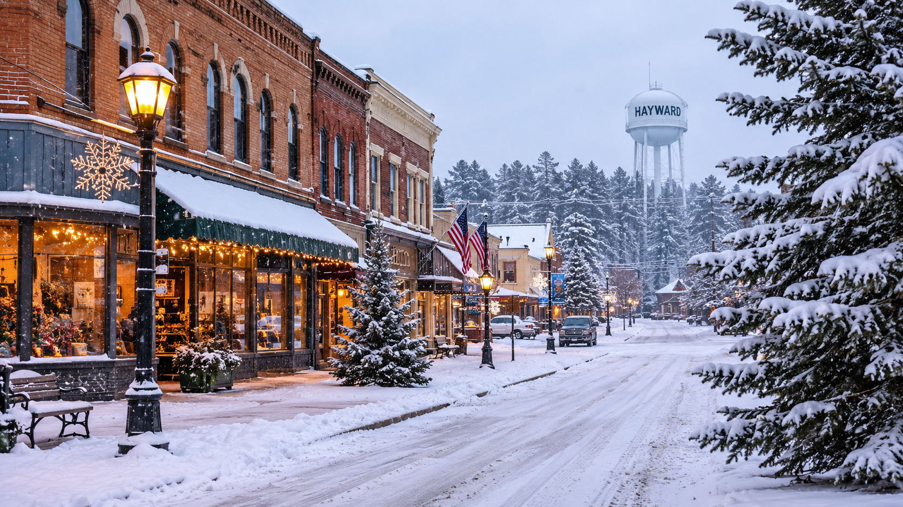

Where should you start your Northwoods trip?
Northern Wisconsin offers forested landscapes, lakes, small communities, and seasonal outdoor recreation. The best base for a snowmobile trip depends on current trail access, lodging, fuel availability, your group's experience, and how far you want to travel.
The following destination ideas are based on real Wisconsin communities. The suggested itineraries and businesses described on this page are fictional, and no actual trail access or business partnership is implied.

Eagle River: A classic winter getaway
Eagle River is known for its Northwoods setting and winter recreation. It can be a starting point for a trip built around forest scenery, local dining, and a comfortable place to unwind after a day outdoors.
Fictional itinerary: Start with breakfast at Pine & Paddle Café, spend the morning on a suitable open trail, stop for lunch in town, and finish with a relaxed dinner at The Lantern Lodge.
Best for: Groups who want a traditional Northwoods atmosphere and a mix of outdoor activity and small-town amenities.
Minocqua: Scenery and a weekend away
Minocqua combines a lake-country setting with shops, restaurants, and places to stay. It is a useful inspiration for riders who want to plan a weekend that balances riding with time exploring the community.
Fictional itinerary: Spend the morning riding a verified open route, take an afternoon break at North Shore Coffee House, and plan a casual group dinner at The Timber Table.
Best for: Couples, friends, and families who want outdoor recreation alongside dining and other winter activities.
Hayward: A relaxed outdoor escape
Hayward is a well-known destination in Wisconsin's northwestern Northwoods. Its broader outdoor recreation appeal makes it an interesting option for visitors who want to combine a snowmobile outing with local food, shopping, or other seasonal activities.
Fictional itinerary: Begin with a planned morning route, stop for lunch at Birchwood Grill, browse local shops in the afternoon, and meet your group for dinner at The Trailhead Kitchen.
Best for: Riders who want flexibility and a trip that can include activities beyond snowmobiling.
Important: confirm access before choosing a destination
These communities are real, but the itineraries, cafés, restaurants, and lodges named in this guide are invented for the class project. They are not actual businesses. Check current county trail reports, official maps, road crossings, local regulations, and business information before planning a real trip.
How to plan a snowmobile-friendly day
Make your stops part of the plan
- Start with breakfast. Choose a convenient meeting place where everyone can review the route, forecast, and trail status.
- Ride during the best available conditions. Set a realistic distance and allow extra time for slower sections, breaks, and changing weather.
- Plan a lunch stop. Confirm that the location is open, that you can reach it legally, and that your group has enough fuel for the full journey.
- Leave room for exploring. Walk through town, visit local shops, or find a scenic place that is accessible without entering closed or restricted areas.
- End the day safely. Set a turnaround time that accounts for daylight, fuel, fatigue, and the weather forecast.
What to look for in a good stop
- Convenient location: Check whether the stop is accessible by a currently open, legal route. Never assume a business has direct trail access.
- Warm indoor space: A comfortable place to rest helps everyone recover from the cold.
- Food and drinks: Plan for meals and water rather than relying on finding an open business along the way.
- Fuel and parking: Verify operating hours, parking arrangements, and any local restrictions in advance.
- Options for the whole group: Consider non-riders, younger family members, and anyone who wants a break from outdoor activities.
Make the evening count
After a day outside, a good evening can be simple: warm up, enjoy dinner, review photos, and discuss the next day's plans. If your group is staying overnight, choose lodging in advance and confirm check-in arrangements during winter weather.
Keep safety in mind after the ride, too. Never operate a snowmobile after drinking alcohol or using impairing substances. Arrange a safe way to travel between your lodging, restaurant, and other stops.
First trip or annual tradition?
First-time visitors can focus on one community, a short route, and a small number of planned stops. That leaves time to learn the area without rushing.
Returning riders can use a familiar destination as a base while exploring a different open route or visiting another nearby community, provided current trail conditions and travel distances make it practical.
For real trip planning, start with the Wisconsin Department of Natural Resources and the National Weather Service. Verify all business details and local trail information independently.